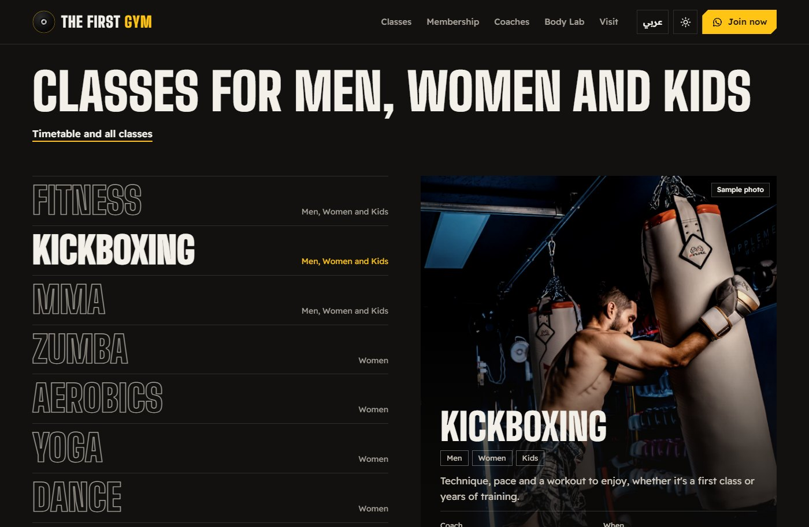
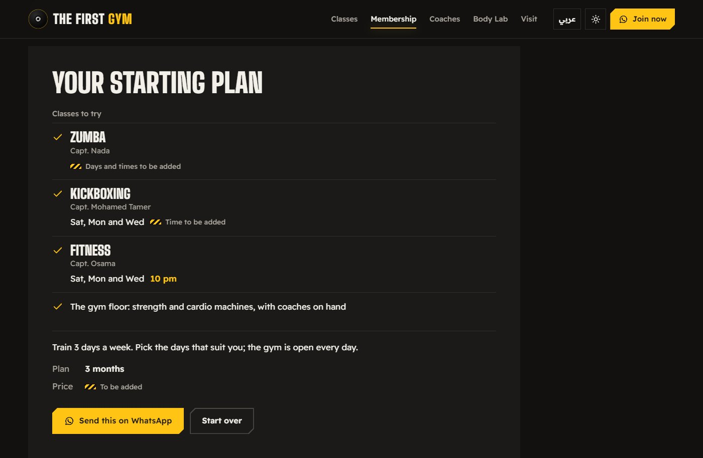
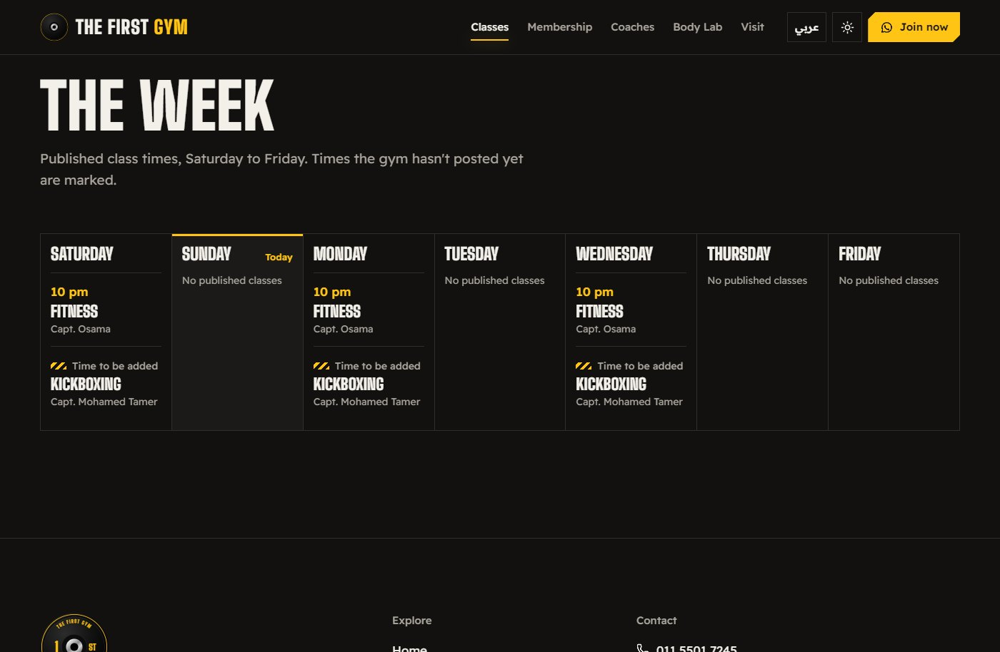
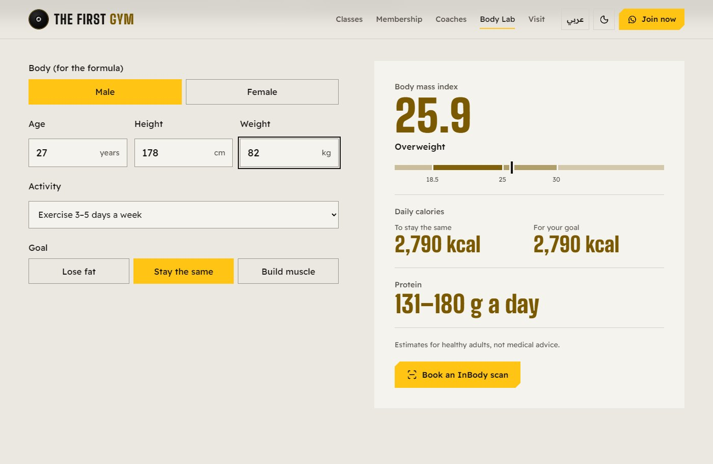
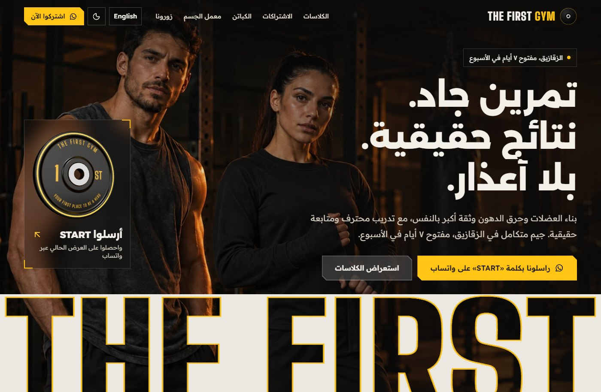

A concept website for The First Gym, a real gym in Zagazig, built from its Facebook page and Google Maps listing. The hero flickers on like the gym's lights, the name is cut out of the page as a stencil, and every class time, coach and offer comes from the gym's own posts, in English and Arabic.
Role
Concept, design and development
Year
2026
Stack
React, JavaScript, three.js, React Three Fiber, React Router, Vite
Gyms in Egypt live on Facebook. Offers, class times and contact details are spread across posts and posters, mostly in Arabic, so a visitor has to scroll and send messages to learn the basics. The First Gym's page has the facts, but no single place that answers where, when, what and how much.
The site gathers those facts into one data file and builds every page from it, turning the gym's black-and-yellow look into photography, giant condensed type and caution tape. What the gym hasn't published, like prices and most class times, is marked "To be added" instead of made up.
What it does
A hero where the lights flicker on like fluorescent tubes, the gym's own tagline rises, and "THE FIRST" is cut out of the page as a stencil with the photo showing through.
The gym's weight plate in 3D on a glass card, lit by strips of LED light. three.js loads only when the card is on screen and never on phones, with a flat drawing in its place without WebGL.
A class picker that works with the arrow keys, a class list filtered for men, women or kids, and a Saturday-to-Friday timetable that marks today in Cairo time.
A four-question plan finder that suggests classes and a plan length, then opens WhatsApp with a ready message starting with START, the word the gym asks for.
Body Lab: BMI, daily calories and a protein range that update as you type, accepting Arabic-Indic digits, with a link to book an InBody scan.
A visit page with directions to the gym's map pin, a live "open now" line worked out across overnight hours, and an FAQ answered only from the gym's own posts.
How it's built
React 19 and JavaScript with React Router and Vite. Every fact, from the address to the classes, coaches, hours and offers, lives in one data file next to its source, and the pages render from it, so a missing value shows a marker instead of a guess. The 3D plate is three.js through React Three Fiber in its own chunk; the first load is about 111 KB of JavaScript gzipped, and the photos are WebP. Vercel serves it with a Content-Security-Policy and security headers, and 50 tests run on every push.
The gym's own postsFacebook and Google Maps
One data fileEach fact with its source
Pages in two languagesGaps marked, never invented
Decisions that shaped it
Nothing invented
The gym hasn't published its prices or most class times, so the site doesn't guess them. Each missing value shows a small hazard-tape marker reading "To be added", and the opening hours taken from Google Maps say "To be confirmed". When the gym sends the real details, they go into the data file and the markers disappear.
WhatsApp instead of a sign-up form
The gym already answers on WhatsApp and asks people to send START. So the plan finder and every Join button open WhatsApp with a message written in the visitor's language, including the classes and plan they picked. There's no form, account or server to run.
3D only where it pays off
The plate is the one 3D object on the site. It loads after the page, only when its card scrolls into view and never on phones, stops animating off screen, and becomes an SVG drawing without WebGL. Everything else is CSS and SVG, so the first load stays small.
Cairo time, not the visitor's clock
Today's column in the timetable and the "open now" line are worked out in Cairo time, so they stay right for a visitor abroad. Hours that run past midnight, like 7:30 AM to 3 AM, count as one evening rather than two days.
Arabic that speaks to everyone
The Arabic copy addresses visitors in the plural, so it reads right to men and women alike, with Arabic-Indic digits and correct plural forms. A test fails if a singular command slips in, and the hero photo mirrors for right to left.
Screens

The class picker: the chosen name fills in, with the class photo, audience, coach and published times beside it.

The plan finder's result: classes to try with their coaches and times, a plan length, and the message ready to send on WhatsApp.

The week from Saturday to Friday, with today marked in Cairo time and times the gym hasn't posted flagged.

Body Lab in the light theme: BMI on a scale, daily calories and a protein range, updated as you type.

In Arabic with the light theme: the layout and the hero photo flip right to left.
A concept built from the gym's public pages. Class, coach and facility photos are placeholders marked "Sample photo" on the site.
By the numbers
6Pages
50Automated tests
2Languages, LTR and RTL
0Facts made up
Animations are off because your device is set to reduce motion.